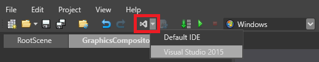
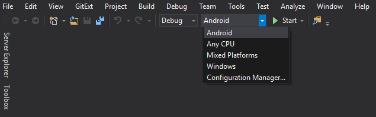
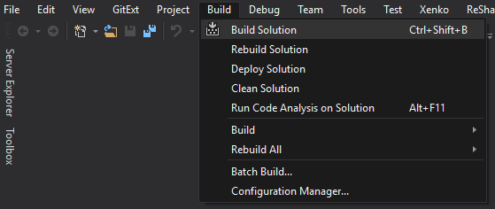

ゲームの配布
ゲームを公開する準備ができたら、Visual Studio でリリース ビルドを作成して、それを配布します。
1. リリース ビルドを作成する
以前にリリース モードでゲームをビルドしてある場合は、プロジェクト フォルダー (例：MyGame/Bin/MyPlatform/Release/) で、Data フォルダーを削除します。このフォルダーには、古いバージョンのアセットなど、必要のないファイルが含まれていることがあるので、最初から再度ビルドするのが最も簡単な方法です。
Game Studio でプロジェクトを開きます。
ツール バーのドロップダウン メニューをクリックして、［Visual Studio］を選択します。

プロジェクトが Visual Studio で開きます。
Visual Studio で、［ソリューション構成］ドロップダウン メニューから［リリース］を選択します。

［ソリューション プラットフォーム］ドロップダウン メニューから、ビルドを作成する対象のプラットフォームを選択します。

Note
Stride プロジェクトに追加したプラットフォームに対してのみ、ビルドを作成できます。これを行う方法については、「プラットフォームを追加または削除する」を参照してください。
Android または iOS 用にビルドするには、Xamarin が必要です。Xamarin は Visual Studio のライセンスに含まれます。Visual Studio 2017 で Xamarin をインストールする方法については、この MSDN ページを参照してください。
［ビルド］で［ソリューションのビルド］を選択します。

プロジェクトのバイナリ フォルダー (例：MyGame/Bin/MyPlatform/Release) に、リリース ビルドが作成されます。
Tip
［リリース］フォルダーをさらにわかりやすい名前 (ゲームのタイトルなど) に変更してもかまいません。
2. 不要なファイルを削除する
プロジェクトの bin フォルダーのリリース フォルダー (MyGame/Bin/MyPlatform/Release など) では、以下の不要なファイルを削除できます。
.pdbファイル (デバッグ情報).xmlファイル (API ドキュメント)ファイル名に
vshostが含まれるファイル (例:MyGame.vshost.exe、MyGame5.vshost.exe.manifest)x64、x86、data以外のフォルダーカスタム構成ファイル (つまり、Stride で作成されないファイル) など、他の必要のないファイル
3. ゲームを配布する
リリース ビルドを作成した後は、目的に最も適した方法で配布します。
Stride で作成されたゲームを Windows で実行するには、次のものが必要です。
.NET 4.6.1
DirectX11 (Windows 10 以降に含まれます)、OpenGL、または Vulkan
Visual C++ 2015 ランタイム (Visual Studio でのプロジェクトのプロパティの設定に応じて、x86 および x64 のどちらか一方または両方)